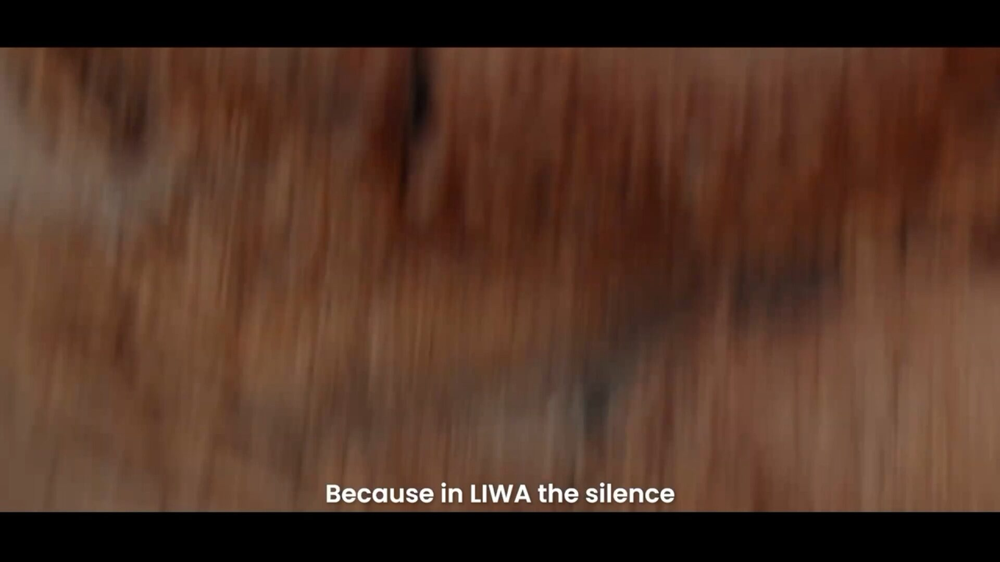
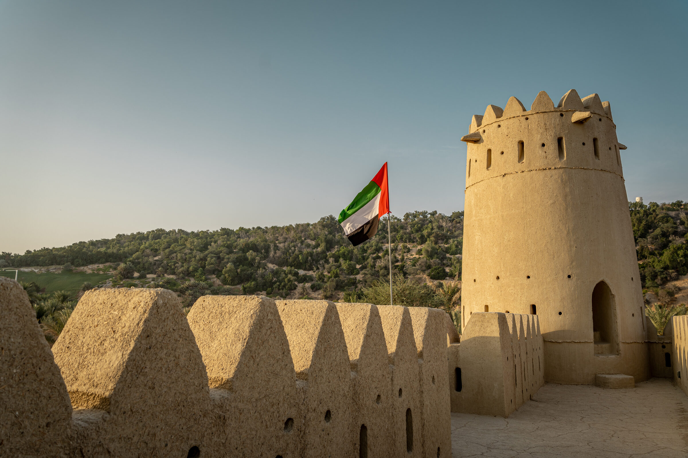
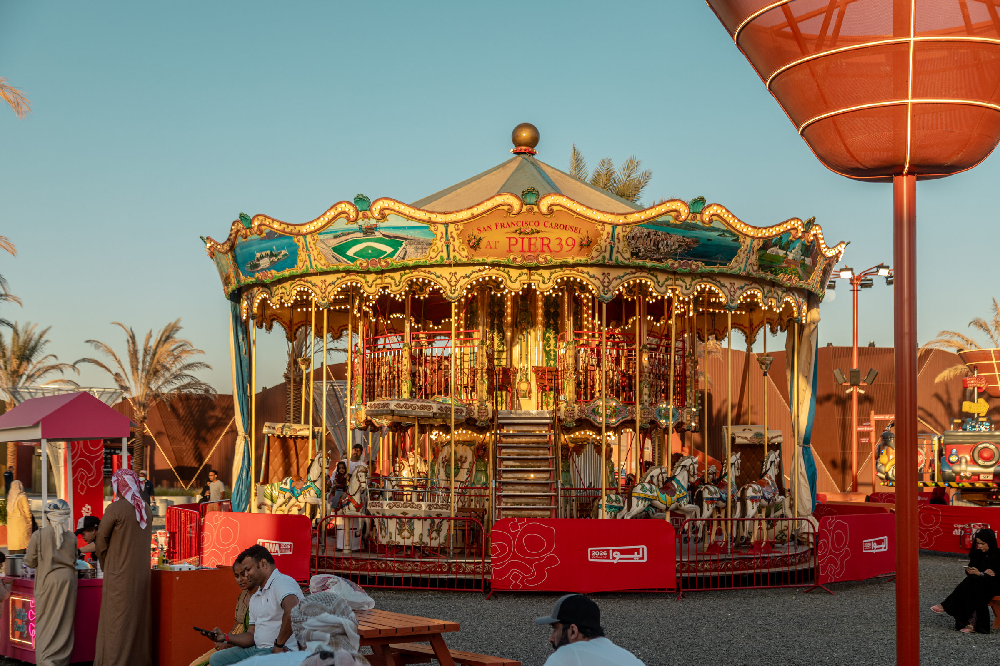
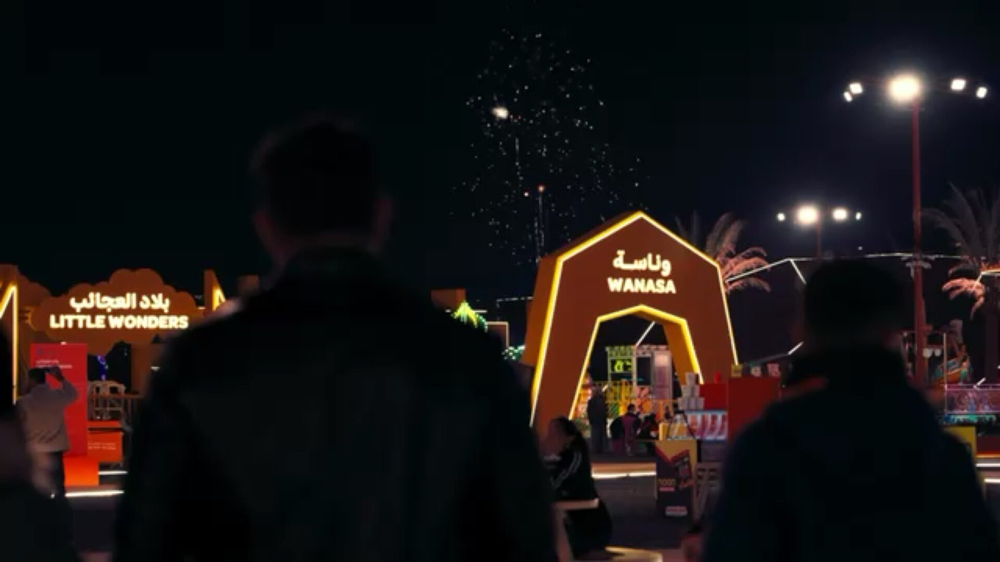

Liwa International Festival · 11 Dec 2026 – 3 Jan 2027
The Desert's Grand Stage
Nine Trail stops. One journey across Al Dhafra — motorsport, heritage, and desert nights.
Every Contour Has a Story
The Trail, mapped in real time
Explore the Trail
Five ways in — pick what pulls you
Your pick is remembered across the site, so matching stops get flagged "Picked for you" wherever you go next.
 🏁 Freestyle Drift
🚙 Monster Jam
🏁 Freestyle Drift
🚙 Monster Jam
Tal Moreeb
The Trail's motorsport stage — the "Mountain of Screams" hosts the festival's loudest, fastest stops back to back.

🦅 Falconry 🐪 Camel RacesFive Forts & Traditional Sports
Emirati heritage at its most hands-on — falconry displays, saluki racing, and craft workshops around the restored Five Forts.

🎠 Carnival Rides 🧵 WorkshopsWanasa & the Village
A carnival wonderland built for joy — rides, creative workshops, and play zones inside Liwa Village for every age.

🎤 Headline Concerts 🎆 NYE FinaleLive Programming
Headline concerts, a nightly souq, and a New Year's Eve finale that lights up the entire Village.
 🏜️ Dune Bashing
✨ Stargazing
🏜️ Dune Bashing
✨ Stargazing
The Open Desert
Off the marked route and into the dunes — guided 4x4 experiences, sandboarding, and stargazing tours after dark.
Freestyle drift, from above
Real footage from the Trail's motorsport stage — cars carving the dune floor beneath the Mountain of Screams.
Book the Motorsport Experience →Every stop starts with the start
Behind the grid before the run — the quiet second before the loudest stage on the Trail wakes up.
View Live Programming →A fleet, and one open dune
Guided 4x4 convoys head out past the marked route once the sun drops — the Trail's most-booked add-on.
Explore the Desert →Craft, kept alive by hand
Around the restored forts, artisans run live workshops in weaving, sadu, and traditional metalwork.
Book a Workshop →Where the Trail ends every night
Nine stops lead back to one town square — food, the night souq, and the Village lit up until close.
Book Tickets →Find Your Way
One map, every Trail stop
Zones, stages, prayer rooms, first aid, parking, and all nine Trail stops in one interactive map — built for outdoor use on your phone.
Open the Interactive Map

Stop 3 · The Base Camp
Plan your stay, then taste the desert
Desert resorts, oasis hotels, and on-site camping — plus four ways to eat, from Bedouin classics to fine dining under the dunes.
View Accommodation & Dining →Personalised For You
Plan your perfect Liwa day
Two quick questions — we'll line up the three Trail stops that fit you best.
What's your festival personality?
Who's coming with you?
Your Liwa Day
The Desert Daredevil
Good to Know
Frequently asked questions
Is there an entry fee for Liwa International Festival?
Many Trail stops and stages are free to enter. Ticketed access applies to select motorsport, headline concerts, and workshops — see Tickets for the full breakdown.
What is the Liwa Trail?
Nine physical stops across the festival grounds — from Tal Moreeb to the Five Forts to Liwa Village — each with its own booking action. See The Trail for the full route.
Can I try dune activities as a visitor?
Yes — dune bashing, sandboarding, and stargazing tours are available; see The Trail for details and how to add a guided tour add-on at checkout.
Is the festival safe for families with young children?
Yes. Family Day programming, shaded rest areas, medical points, and a dedicated toddler zone run throughout the festival.
What should I bring?
Sun protection, comfortable closed-toe shoes, a refillable water bottle, and a light jacket for cool desert evenings. See the full travel tips carousel.
Is camping available on-site?
Yes — a Camping Pass add-on can be booked directly during checkout on the Tickets page, alongside guided tours and merchandise bundles.
Is the site accessible in Arabic?
Yes — use the EN/AR switch in the header to view the site right-to-left with Arabic navigation and headings.
How do I get to Liwa from Abu Dhabi city?
It's roughly a 2.5-hour drive via the E11 and E65. Full directions, parking, and taxi guidance are on the Plan Your Visit page.
Stay Updated
Get programming drops and ticket alerts
Join the mailing list for early access to headline event tickets and schedule updates.
By subscribing you agree to our Privacy Policy. Unsubscribe anytime.